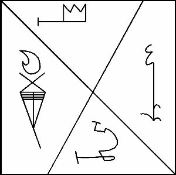

NERGAL’in sayısı sekizdir ve işte onun mührü:

Jüpiter’in Tanrısı, Majisyenlerin Tanrısı, İki-başlı Balta, MARDUK KURIOS’tur. MARDUK Babamız ENKI’den Kadimlerin güçlerine karşı savaşmak için doğdu ve Kötülüğün ordularına boyun eğdirerek ve Kadimlerin Kraliçesini ayakları altına alarak çetin bir dövüş kazandı. Yılan öldü, ama hala rüya görüyor. MARDUK’a Yaşlı Tanrılar Konseyi tarafından bugüne kadar yitirmediği Elli İsim ve Güç ihsan edilmiştir. Rengi Mordur. Özü, teneke maddesinde ve pirinçtedir. Onun kapısı, takip eden ritüelleri izlediğinde ulaşacağın Altıncıdır. Işıklar Merdivenindeki Basamağı mordur.
Bu, onun Jüpiter gökyüzünde güçlü durumdayken, Efendimiz ENKI’ye özel bir çağrıda bulunarak teneke ya da pirinç bir levha üzerine oyman gereken Mührüdür. Diğerleri gibi işlenmeli ve saf ipeğin içine sarılmalı ve kullanılması gereken zamana kadar yatırılmalıdır. MARDUK’un kudretli bir savaşçı olarak uzun sakalı ve ellerindeki alevden diski ile göründüğünü bil. Bir yay ve bir sadak dolusu ok taşır ve Gözlemeyi sürdürerek gökyüzü boyunca ilerler. Onun yardımını yalnızca en korkunç koşullarda çağırmaya dikkat et, çünkü onun kudreti güçlüdür ve öfkesi yakıcıdır. Jüpiter yıldızının gücüne ihtiyaç duyarsan, bunun yerine bu sayfalarda listelenen uygun Güçlerden birini çağır ve mutlaka geleceklerdir.